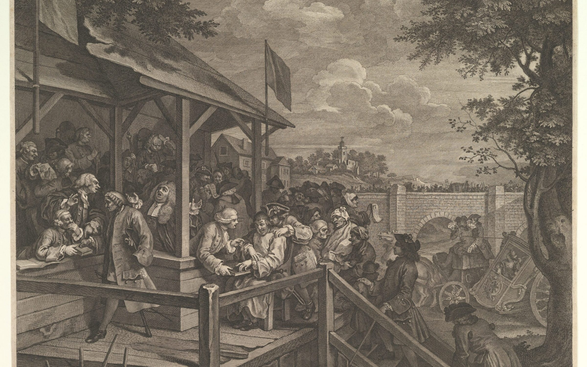

Sánchez likely to remain in power after stalemate in Spanish elections
Spain is in limbo with both left and right claiming victory in
yesterday’s elections despite predictions that the right would win an
outright majority. Both President Pedro Sánchez of the Socialist
Workers’ Party (PSOE) and his rival Alberto Núñez Feijóo of the
conservative Popular Party (PP) have been pictured raising their fists
to adoring crowds claiming victory. Yet both of them lack a clear
route to power. Feijóo’s PP performed well, up to 136 seats from 89 in
2019 but some distance short of the 176 seats needed to form a
government. Prior to the election, many thought Feijóo would turn to
Santiago Abascal’s hard-right Vox party to form a coalition –
resulting in the return of Spain’s far-right to government for the
first time since Franco. But Vox had a terrible night at the polls and
performed much worse than expected. The party lost more than a third
of its seats, meaning its 33 seats would not be enough to grant Feijóo
the power to form a coalition.
Why elections are always on a Thursday

Tomorrow’s by-elections arrive just ahead of next week’s parliamentary
recess and it is quite clear that we are in silly season. The term was
originally coined in an article called “The Silly Season” in the
Victorian London weekly, The Saturday Review, on 13 July 1861. The
idea was that as the respected parliamentarians and hacks took their
late-summer holidays, the mantle was taken up by rookies. The article
claims: “The hands which at other times wield the pen for our
instruction are now wielding the gun on a Scotch moor or the
Alpenstock on a Swiss mountain. Work is left to feebler hands…In those
months the great oracle becomes – what at other times it is not –
simply silly.”
Former permanent secretary paid £335k severance
On the day of the all-important by-elections, the last thing the
Tories need is more accusations of sleaze. Unfortunately, figures from
the Treasury’s annual accounts surrounding severance pay-outs will do
just that. The Sun has reported that the former permanent secretary to
the Treasury, Sir Tom Scholar, was paid a whopping £335,000 severance
payment after being sacked by Liz Truss when she became prime
minister. Scholar was also paid £122,000 in compensation and annual
leave adjustments in lieu of notice, which brought his total annual
payments up to around £550,000 for the year 2022-23.